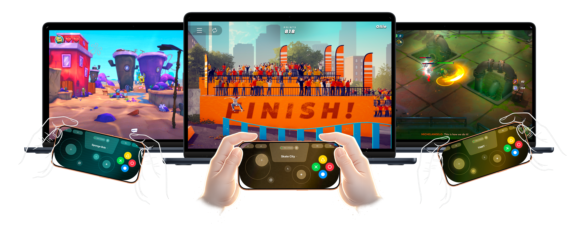
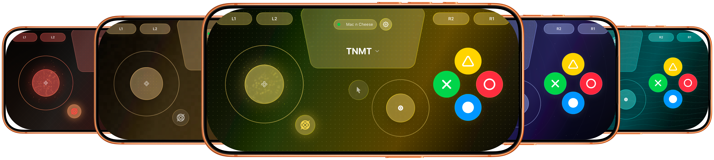

Transform your iPhone into a professional-grade, wireless game controller and virtual gamepad for macOS. Experience ultra-low latency gaming without bulky hardware.
Works locally over Wi-Fi • No Bluetooth Lag • 100% Private

Download the iDrift Receiver for Mac and the companion iOS app from the App Store.
Ensure both devices are on the same Wi-Fi. Pair iPhone with QR code and start playing.
Your iPhone is now a fully functional wireless gamepad. Launch any game and enjoy.
Dual analog sticks, D-pad, triggers, and ABXY buttons mapped perfectly to keyboard & mouse inputs.
Utilize the iPhone's accelerometer for precise racing wheel control in driving simulators.
Built on a custom UDP protocol optimized for your local network, delivering near-zero lag performance.
Complete privacy. No accounts, no cloud servers, no tracking. Your data stays on your Wi-Fi.
From sleek dark modes to retro-inspired skins, iDrift lets you customize your controller's look and feel. Remap buttons, adjust sensitivity, and make it truly yours.

No. Your iPhone and Mac are all you need.
No. iDrift uses your local network only for speed and privacy.
Some games require keyboard or mouse input simulation. macOS protects this behind permissions to keep users safe. They are enabled manually and fully under your control.
The Mac companion app is available directly from this website as a notarized installer.
To control games, macOS requires explicit permission. This is a system requirement, not specific to iDrift.
Some Mac games only accept keyboard and mouse input. Accessibility allows iDrift to translate controller actions into those inputs.
"I built iDrift because I wanted to play games on my Mac from the couch, but didn't want to carry around a bulky controller. The goal was simple: create a virtual controller that feels indistinguishable from a physical one.
We spent months optimizing the network stack to shave off every millisecond of latency. The result is a seamless connection that feels like magic. Whether you're drifting in a racing sim or exploring an open world, I hope iDrift enhances your gaming experience."
— Parth.ant
Got more questions or need help?
support@parthant.com